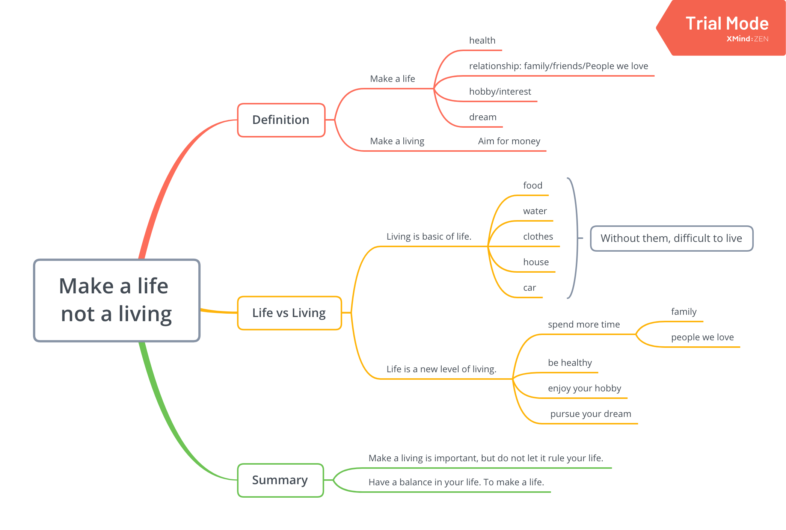
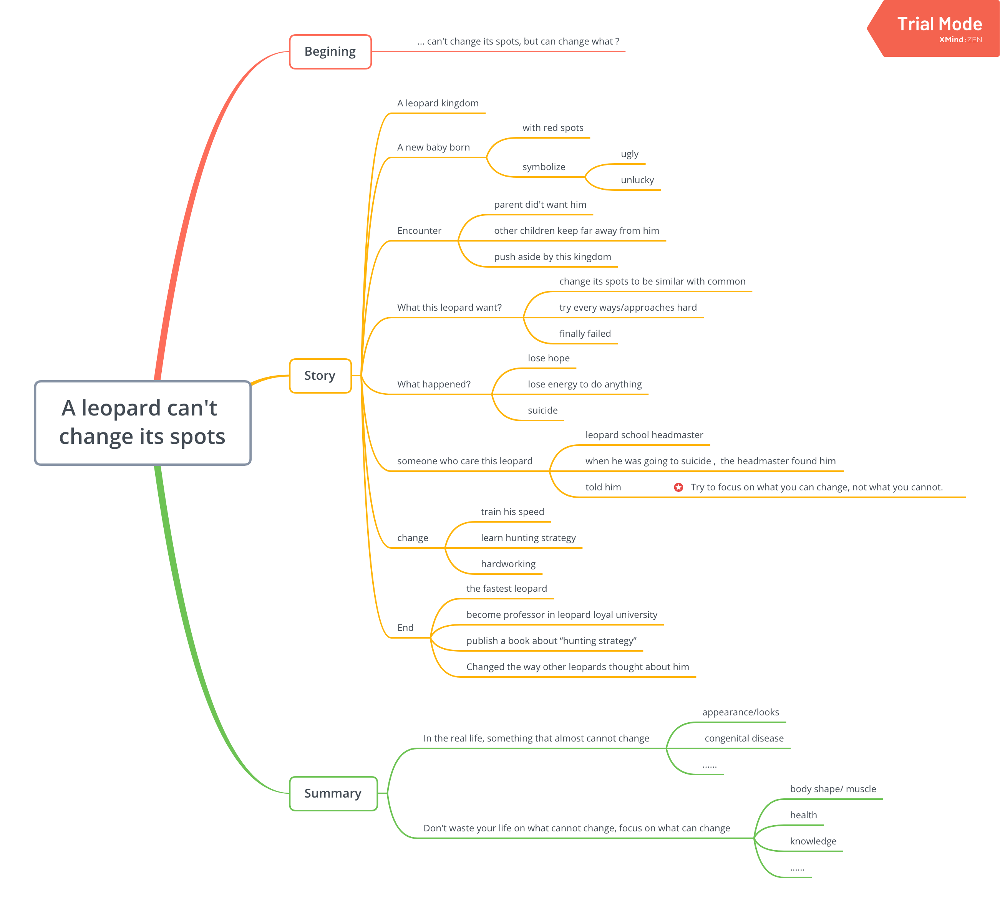
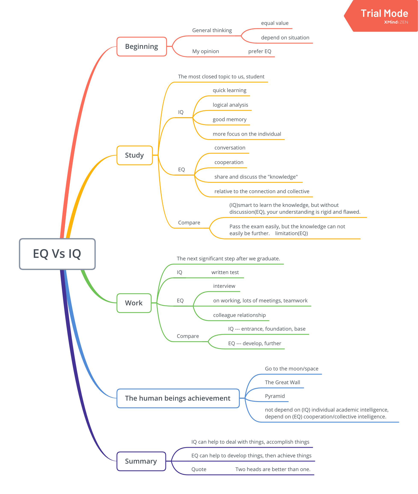
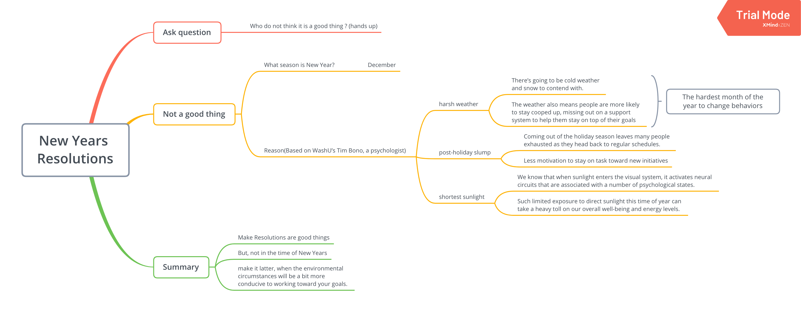
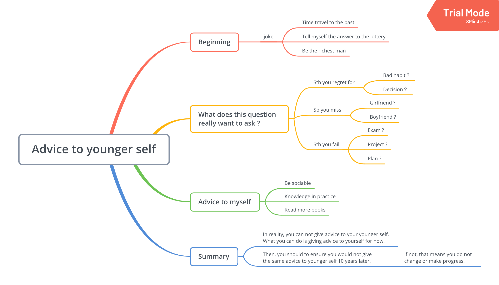

In this page, I’d like to share the topic lists of Public Speaking Society and my presentation.
1. Topics
- Money or love ?
- There is no such thing as ‘luck’.
- Social media is the 21th century’s most harmful drug.
- How do lazy students survive/succeed in life ?
1.1. How do lazy students survive/succeed in life ?

2. Topics
- Pain and suffering are always inevitable for a large intelligence and a deep heart.
- What horrifies me the most is the idea of being useless.
- First thing you’d do if you won the lottery.
- Tell us about one childhood memory that is special to you.
- Pick your own topic: “Books or Videos”.
2.1. Books or Videos

3. Topics
- Where do you see yourself in 10 years ?
- If you could make one animal fly, what would it be ?
- A journey of a thousand miles begins with a step.
- Should you read the book or watch the movie ?
3.1. Where do you see yourself in 10 years ?

4. Topics
- Quincy Jones - Make a life not a living - (try motivational)
- Never be smaller than you are. (try personal)
4.1 Make a life not a living

5. Topics(Tell story)
- A leopard can’t change its spots.
- Every saint has a past, and every sinner has a future.
- Awareness in itself is healing.
- Do aliens exist?
5.1 A leopard can’t change its spots.

6. Topics
- Where is the best place you’ve ever travelled to ?
- Enmotional intelligence is more important than academic intelligence.
- Is world peace achievable ?
- My dream Christmas would look like…
6.1 Enmotional intelligence is more important than academic intelligence.

7. Topics
- Are the Grammys a pointless exercise ?
- Is New Year’s resolution a good thing ?
- Should the Christmas Holidays be longer ?
- One thing I look forward to this term ?
7.1. Is New Year’s resolution a good thing ?

8. Topics
- Your favourite game !
- Best way to celebrate your birthday :)
- What advice would you give to your younger self ?
- Who is the most important person in your life and why?
8.1. What advice would you give to your younger self ?
